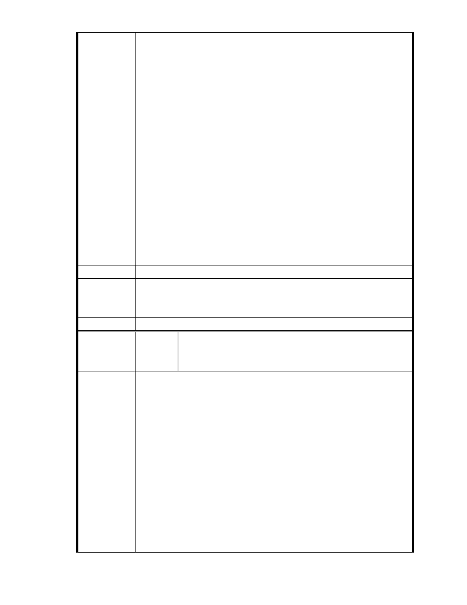

八、上述適法性問題係程序問題，都委會於討論實質內容前，應先釐清
以下問題，以確定實質審查之必要性：
1、都發局有審慎認定以符合法規意旨嗎？
2、「善經濟」是從嚴解釋及適用嗎？
3、本案是不是藉詞任意變更？
4、本案是特定重大事變造成特殊情況而有變更之必要嗎？
5、本案有時間上的要求（急迫性）且來不及回歸通盤檢討嗎？
九、都發局數次於會議中表明本案已獲得內政部同意（第八次專案小組
亦然），此一說法嚴重誤導委員對本案之認知。原因如下：
1、都發局所謂內政部之同意，實為內政部社會司針對本案社會福利事
業的同意，而非土地變更適法性的同意，且內政部亦在該同意函中
明確指出「請慈濟基金會應就有關土地變更編定及興辦事項，依都
市計畫相關法規之規定，逕恰台北市政府辦理。」
2、內湖保護區守護聯盟針對都發局的說法函詢內政部，內政部已明確
回覆「有關該興辦計畫，合乎都市計畫法第 27 條第 1 項第 3 款所
稱經濟發展之需要 1 節，非本部所提意見」。
十、本案後續會議，仍請依法通知本會與會旁聽並表達意見。
建議辦法
一、本案已進入都市計畫法定程序，後續將依都市計畫委員會審定內容
市府說明
為準。
二、相關陳情意見將納入本案審查人民意見，依法定程序辦理。
委 員 會 決 議 同編號 1。
MA201312050331 洪美惠、MA201312050333 郭岱
編
號 272
陳情人 矗、MA201312060112 黃欣蓮、MA201312060181
市長，您好：
黃瑩萱
陳情理由
我反對慈濟基金會變更內湖區大湖公園側保護區為社會福利園區。
今年 11 月 23 日各大報大幅度報導：【行政院長江宜樺 22 日去視察高雄、
屏東的防洪治水工程，對高雄市三民區寶業里滯洪池發揮效益，表示肯
定，指先前 8 年 800 億治水預算展現實際成效，未來 6 年 600 億治水預
算將廣設滯洪池，讓城市本身就有蓄洪能力。並說，行政院 6 年 600 億
治水預算將沿用此經驗，將在都會區廣設滯洪池，打造「海綿城市」概
念，讓城市自己有蓄洪能力，而不只是加高堤防、擴建下水道。】
城市是需要空間納洪才能永保安康的，而慈濟申請變更的保護區所在地
原本就是自然產生的谷地集水滯洪區域，此地現今成為平地的面貌，全
然是因為北市府對違法企業消極管理所致，而今慈濟順勢向政府申請變
更保護區的行為，十多年來居民不堪其擾，每遇專案小組會議、都委會
大會，大家就要放下手邊工作來會議場上跟開發業者慈濟基金會對抗。
- 316 -